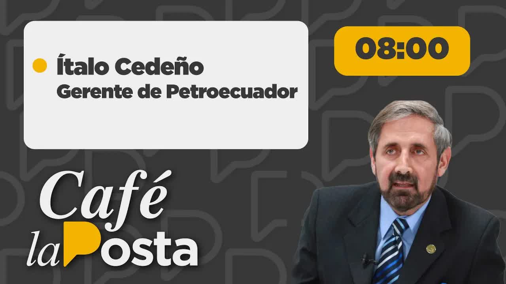
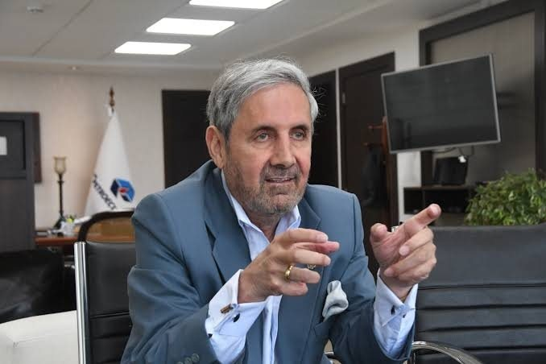
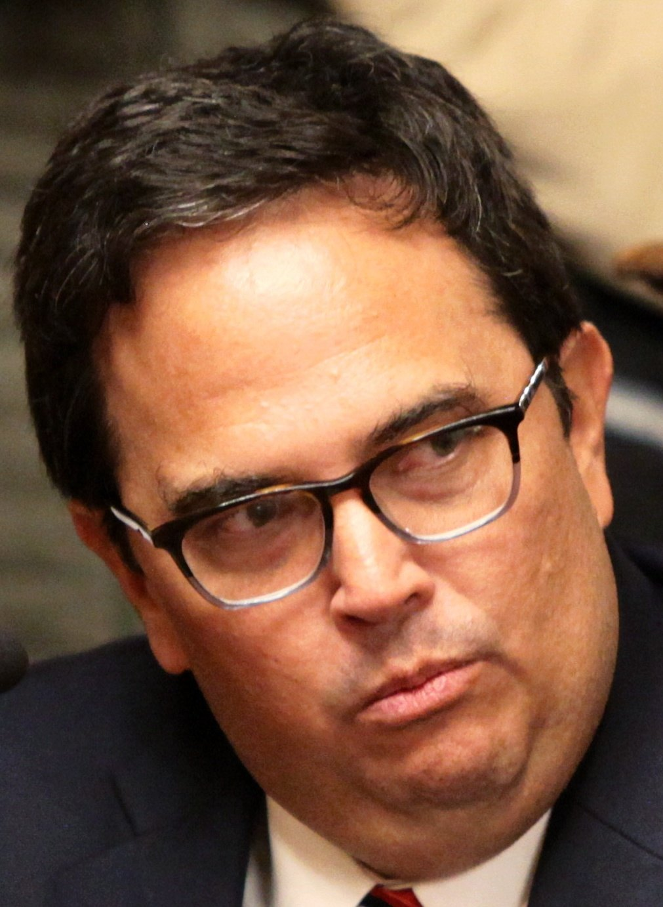
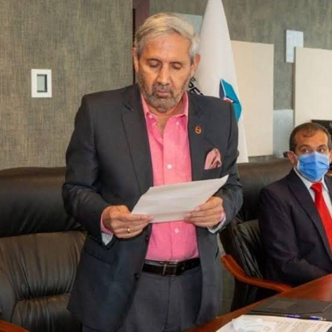
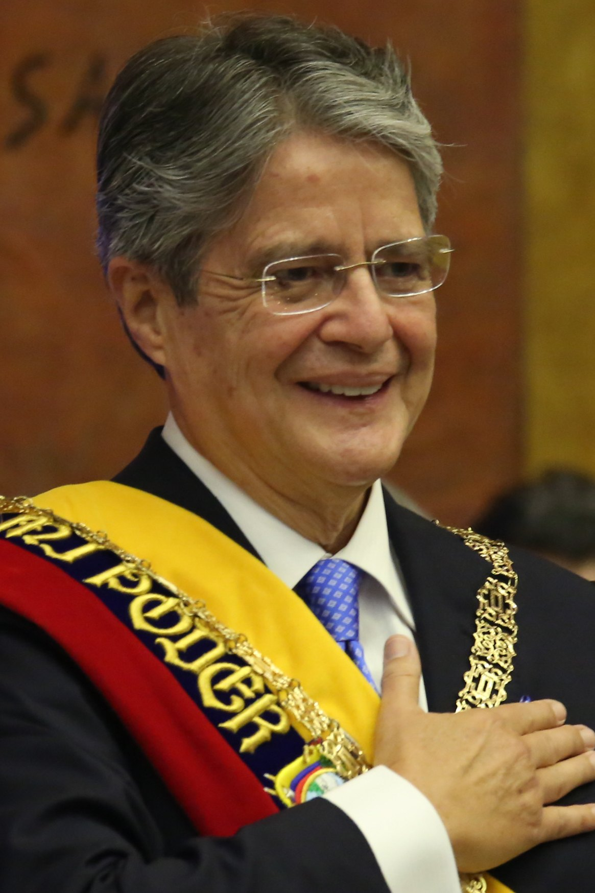
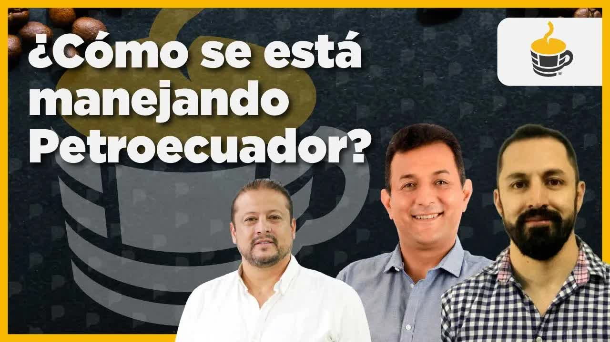

1 ago 2022 · La entrevista a Ítalo Cedeño (primer bloque)
Ítalo Cedeño llegó a la gerencia general de Petroecuador el 1 de enero de 2022, nombrado por Guillermo Lasso. Siete meses después se sentó en Café la Posta a responder por su esposa: un audio en el que ella recomendaba carpetas a la directora de talento humano, un informe de inteligencia que la ubicaba en el despacho del gerente dirigiendo contrataciones, chats con funcionarios y llamadas por Signal a un alto directivo despedido. Al aire, Cedeño reconoció que ella tuvo influencia en su cargo durante el primer mes y que se lo confesó al presidente en una reunión reservada en Carondelet. Esa misma noche el presidente pidió al directorio cesarlo y al día siguiente renunció.

Ítalo Cedeño es ingeniero en petróleos de la Espol, con posgrado en Harvard y una maestría en Venezuela, donde vivió cinco años. Suma 45 años en el sector, público y privado. Cuando ya se había jubilado, Iván Correa lo llamó para hablar con Guillermo Lasso. Fue designado en diciembre de 2021, estuvo en funciones desde el 1 de enero de 2022 y empezó a trabajar el 3, el primer día hábil. Lasso le pidió llevar la producción a un millón de barriles diarios, la promesa de campaña. Cedeño le respondió que duplicar la producción de hidrocarburos toma cinco años, del 1 de enero de 2022 al 31 de diciembre de 2026, y que espera cerrar el Gobierno en unos 900.000 barriles por día.

La primera vez que Boscán escuchó su nombre fue como candidato impulsado por Guadalupe Llori, entonces presidenta de la Asamblea. Cedeño reconoció la amistad desde que ella era prefecta de Orellana y él producía petróleo en medio de los paros binacionales, pero dijo que unas veinte personas pudieron sugerirlo y que los colegios de ingenieros de petróleo pidieron al presidente su designación. Al llegar armó un anillo de unas veinte personas de su confianza. El Universo describió el círculo con rostros de la industria y algunos personajes polémicos: Jaime Pinos Manzano como procurador, Salgado en comercialización, Cerón en exploración, Rafael Armendáriz en coordinación operativa y Pablo Novoa en comercio internacional.
No es funcionaria. Audio, informe de inteligencia, chats y llamadas la muestran recomendando, entrevistando y decidiendo sobre personal
Directora de talento humano cuando recibió la carpeta de la esposa del gerente. Cedeño la movió a la procuraduría de la empresa
Procurador de Petroecuador. Exasesor de Patricio Rivera en el correísmo; el nombramiento más polémico, según El Universo
Gerente de exploración y producción. Una fuente lo identificó entrando al banco con la esposa del gerente; Cedeño dice que no es él
Gerente de comercio internacional, el puesto que Cedeño llama el salario del país
Expresidenta de la Asamblea. Cedeño reconoce una amistad desde que ella era prefecta; su yerno tiene contratos de taladros con la empresa
Boscán le preguntó por Carla Gonzaga, abogada del departamento legal. Los rumores decían que era pariente suya o que la había puesto su esposa. Cedeño negó el parentesco y dijo que no es de su círculo íntimo. Pero admitió que ella era directora de talento humano y que él la movió de cargo: la mujer del César no solo debe ser honesta sino parecerlo. La razón de esa mudanza estaba en un audio.
La hoja de vida: 45 años en el sector, jubilado y llamado por Iván Correa para hablar con Lasso.
Amistad con Guadalupe Llori desde que ella era prefecta de Orellana
ReconoceQue ella lo impulsara al cargo
NiegaLa esposa del gerente recomienda a un funcionario que trabajó con la presidenta de la Asamblea.
La influencia de su esposa durante el primer mes
ReconoceQue ella designe o despida: yo soy el que decide
NiegaLa cónyuge, sin ser funcionaria, aparece con frecuencia en el despacho dirigiendo contrataciones.
Que exista el informe
AlegaQue ella dirigiera contrataciones
NiegaMensajes sobre entrevistas y cambios de puestos, y llamadas a un alto funcionario hasta febrero.
Los chats son de su esposa
ReconoceQue él ordenara esos cambios
NiegaLa esposa entra acompañada de un directivo de la empresa y sale por atrás con un sobre.
Que su esposa aparezca en el video
ReconoceSaber qué contenía el sobre
AlegaLasso, Iván Correa, el ministro Vera, Roberto Salas y Cedeño. El Gobierno la declaró reservada.
Que se lo contó al presidente en la sobremesa
ReconoceQue la reunión tratara sobre su esposa
NiegaTres contratos de taladros del yerno de Guadalupe Llori durante su administración.
Que los contratos existen
ReconoceHaberlos manejado: eso lo ve exploración y producción
NiegaEl código de ética del Gobierno sanciona lo inmoral, no solo lo ilegal, y esa es causal de destitución.
Dar la cara sin un solo papel el mismo día
ReconoceEl gerente admitió la influencia de su esposa y la reunión reservada.
Lasso pidió al directorio de Petroecuador cesar al gerente esa misma noche.
Cedeño presentó su renuncia irrevocable, a siete meses de asumir.
La Posta reprodujo un audio de Marta Morla, esposa del gerente, conversando con Carla Gonzaga, entonces directora de talento humano. Le habla de un chico que trabajó los últimos tres años con la presidenta de la Asamblea y que renunció por lealtad cuando ella renunció: yo tengo una carpeta, no sé si quieras conocerle al señor y ver qué te parece. Las dos se llaman a sí mismas los Ángeles de Charlie. Cedeño reconoció las voces. Boscán resumió el problema: una persona que no trabaja para Petroecuador estaba recomendando carpetas para Petroecuador, y esa persona es la esposa del gerente.
Al principio, el primer mes, único mes, mi esposa tenía influencia, como me imagino que tu esposa también tenga influencia sobre ti, aconsejando. Le dije: la mujer del César no solo debe ser honesta sino parecerlo. No te metas, porque me estás haciendo daño. No lo hizo nunca más. Eso fue lo que yo le dije al presidente.
Ítalo Cedeño, gerente general de Petroecuador, en Café la Posta, 1 de agosto de 2022
Luego, un informe de inteligencia de sus primeros meses en el cargo, con los datos privados tapados. En la parte pertinente dice que, mediante fuente humana, se conoce que la cónyuge de Ítalo Cedeño, a pesar de no ser funcionaria de Petroecuador EP, se observa frecuentemente en el despacho de su esposo, dirige y se encarga de las contrataciones de talento humano así como de los procesos contractuales con los proveedores de bienes y servicios externos. Boscán le ofreció el documento completo para que lo confrontara con la Policía o con el Centro de Inteligencia Estratégica.
Después, los chats. En uno, la esposa escribe a un funcionario: Martita, lo actuado con Mónica me parece muy importante; hay que seguir cambiando todo el plano mayor de puestos, es urgente y muy necesario, de otra manera se convierten de inmediato en nuestros tenaces detractores y nos liquidarán. En otro: a las 12:15 puedo entrevistar a uno y a las 12:30 a otro; no importa si Carla los entrevista antes; yo no voy a decidir hasta después de entrevistarlos. Y el registro del teléfono de un alto funcionario despedido: llamadas de la esposa por Signal, la vía que no queda registrada cuando la Fiscalía investiga, el 31 de enero, el 10 y el 15 de febrero de 2022. No era solo el primer mes.

Cedeño respondió a todo con el mismo argumento: yo soy el que decide. Dijo que su esposa, en enero, quiso ayudarlo a escoger gente honesta y a sacar corruptos; que los funcionarios de Petroecuador son amigos de ella de treinta o cuarenta años; que si alguien tiene algo contra ella vaya a la Fiscalía con pie de firma; y que todos los audios salieron de una señora que se sintió afectada porque él botó a toda la mafia que tenía en Petroecuador, que lo grabó y quiso extorsionarlo. Prefiero morirme antes que ser extorsionado, dijo. Aseguró haber puesto una denuncia en la Fiscalía para que se investigue todo. Boscán le recordó el artículo 6 del decreto 4 y le mostró que las comunicaciones seguían hasta febrero.
Boscán mostró un video del 15 de junio de 2022: la esposa del gerente entra a la agencia del Banco Pichincha de la González Suárez acompañada por un hombre que una fuente identificó como Cerón, gerente de exploración y producción, y sale por la parte posterior con un sobre. Cedeño dijo que no es Cerón, que Cerón usa barba y es más alto, que su esposa tiene un negocio inmobiliario y que nadie hace un negocio ilícito en un banco. La pregunta quedó: qué hace la esposa del gerente entrando y saliendo de una agencia bancaria con un directivo de la empresa.
Después, la reunión reservada del 8 de julio de 2022 en Carondelet: el presidente Lasso, Iván Correa, el ministro Xavier Vera, Roberto Salas y Cedeño. El Gobierno la declaró reservada. Cedeño la describió como una reunión informativa sobre los proyectos y dijo que en la sobremesa hablaron de los chismes de las redes. Allí, jurando por Dios, contó que le dijo al presidente lo mismo que dijo al aire: que en el primer mes su esposa tuvo influencia sobre él para aconsejarle funcionarios honestos y que le pidió que no interfiriera más. Según la versión de otros presentes que llegó a La Posta, la conversación fue tensa, se habló de varios meses y de que dejara de hacer cosas malas. Cedeño lo negó.

Una cosa es no saber, presidente, y otra es no querer saber. Por supuesto que no se va a enterar si no investiga. Por supuesto que no se va a enterar si no permite las investigaciones.
Andersson Boscán, conclusión de Café la Posta, 1 de agosto de 2022
Hubo más preguntas. Cristian Lozada, yerno de Guadalupe Llori, tiene tres contratos de taladros con Petroecuador en su administración; Cedeño dijo que eso lo maneja exploración y producción y que necesita todos los taladros del país para llegar a la meta. Una orden de pago millonaria a la familia Orellana por propiedades expropiadas en Esmeraldas; Cedeño dijo que pagó por orden de un juez, con un convenio con la Procuraduría y sin intereses para no ir a la cárcel. Su patrimonio: la declaración juramentada de 2022 reconoce siete cuentas, cinco en Ecuador y dos en Estados Unidos, y un patrimonio neto de 1,2 millones de dólares; dijo que no tiene cuentas en paraísos fiscales y que paga unos 60.000 dólares de impuestos al año. Sus hijos viven en Estados Unidos y, según él, ninguno trabaja para una empresa de servicios petroleros.
Cedeño agradeció la entrevista y dijo que el que tiene rabo de paja no se acerca a la candela: quiso responder de inmediato, sin un solo papel, porque su actuación es honesta. Boscán le reconoció haber dado la cara. Pero cerró el programa con el dato que importaba: el presidente Lasso puso la vara alta con un código de ética que no solo sanciona lo ilegal sino lo inmoral, y esa es causal de destitución. El presidente ya sabía, por la reunión del 8 de julio, de la influencia directa de la esposa del gerente en contrataciones y designaciones que le corresponden al gerente y no a su círculo familiar.

La respuesta llegó esa misma noche. El presidente Lasso pidió al directorio de Petroecuador que cesara al gerente general, y el 2 de agosto de 2022 Cedeño se adelantó y presentó su renuncia irrevocable, a siete meses de haber asumido con la meta de duplicar la producción. La entrevista le costó el cargo. El 28 de junio de 2023, en el mismo estudio, el dirigente de los trabajadores petroleros David Almeida habló de los escándalos de corrupción de la empresa y, sin nombrarlo, aludió al gerente general que se cayó en esa silla y que, según él, lo persiguió por decir la verdad. Para entonces Petroecuador tenía un ministro de Energía abogado, Fernando Santos Alvite, y una pugna sindical por el comité de empresa.

El caso dejó una pregunta sobre el poder en las empresas públicas: quién decide cuando el que firma reconoce que su esposa entrevistaba, recomendaba y decidía. Y una sobre el presidente que declaró reservada la reunión en la que se enteró.
Actualizado el 5 de septiembre de 2026
Lasso nombra a Cedeño gerente general de Petroecuador.
Cedeño asume con la meta de duplicar la producción en cinco años.
El audio: la esposa recomienda una carpeta a la directora de talento humano.
Llamadas de la esposa a un alto funcionario que luego fue despedido.
Video de la esposa entrando a una agencia del Pichincha con un directivo.
Reunión reservada: Lasso, Correa, Vera, Salas y Cedeño.
Cedeño reconoce al aire la influencia de su esposa.
Tras la entrevista, Lasso pidió al directorio cesar al gerente.
Cedeño renunció de forma irrevocable.
Un dirigente petrolero alude al gerente que se cayó en esa silla.
Gerente general de Petroecuador desde el 1 de enero de 2022. Reconoció la influencia de su esposa en el primer mes.
Esposa del gerente. Sin cargo público. Audio, informe de inteligencia, chats y llamadas la vinculan a contrataciones.
Directora de talento humano que recibió la carpeta. Movida a la procuraduría de la empresa.
Gerente de exploración y producción. Una fuente lo identifica en el video del banco.
Expresidenta de la Asamblea. Amiga de Cedeño; su yerno Cristian Lozada tiene tres contratos de taladros.

Presidente. Nombró a Cedeño y fue informado en la reunión reservada del 8 de julio de 2022.
Ministro de Energía. Presente en la reunión de Carondelet.
Fotos vía Wikimedia Commons. Guillermo Lasso: Presidencia de la República del Ecuador (Public domain).
Reconoció que en el primer mes su esposa tuvo influencia para aconsejarle gente honesta y que le pidió no meterse más; sostuvo que solo él designa y despide; atribuyó los audios a una señora que lo grabó para extorsionarlo tras la salida de su gente; dijo haber denunciado en la Fiscalía; negó que el hombre del video del banco sea Cerón; negó cuentas en paraísos fiscales.
Juró que le dijo al presidente exactamente lo mismo que dijo al aire: un mes, no varios, y nunca que su esposa hiciera cosas malas. El presidente, dijo, lo comprendió.
Declaró reservada la reunión del 8 de julio de 2022. No consta una respuesta pública en el programa.

funcionar algo de gobierno Quédate mirando café la posta toda la semana porque a partir de esta semana empezamos a hablar de corrupción en el gobierno nacional hoy corrupción petroecuador signo de interrogación para que normalmente en la demanda Esa es la trampa no todas las preguntas Exacto corrupción Petro Ecuador denuncias graves gravísimas involucran al presidente el directorio Ecuador el señor ahorita los cedeño…
Leer la transcripción completatambién lo pueden ver en las redes sociales de la posta Pero hay mucho más sucediendo dentro de poco se realizan incluso las elecciones de la dirigencia sindical del comité de empresa de petroecuador y esto ha permitido que se Despierten que se destapen varias anomalías e irregularidades en la entidad vamos a estar revisando eso y vamos a poder conversar también sobre acciones legales que pusieron que puso la actual …
Leer la transcripción completaTranscripciones de los subtítulos automáticos de cada programa. No están corregidas a mano: sirven para buscar una frase y llegar al minuto exacto del video, no como cita textual literal.
El gerente admitió la influencia de su esposa y la reunión reservada.
Lasso pidió al directorio de Petroecuador cesar al gerente esa misma noche.
Cedeño presentó su renuncia irrevocable, a siete meses de asumir.
Los audios, chats, el informe de inteligencia y el video del banco fueron mostrados por La Posta el 1 de agosto de 2022; Cedeño respondió a cada uno en la misma entrevista. Su salida del cargo consta en la prensa de los días siguientes: Lasso pidió al directorio cesarlo la noche del 1 de agosto y Cedeño renunció el 2 de agosto (Primicias, Ecuavisa, El Universo, GK). Los nombres de la esposa del gerente y de la exdirectora de talento humano se escriben como se pronunciaron al aire; la prensa escribió el de la esposa como Martha Morlas. Los videos son los programas originales, alojados en este sitio.